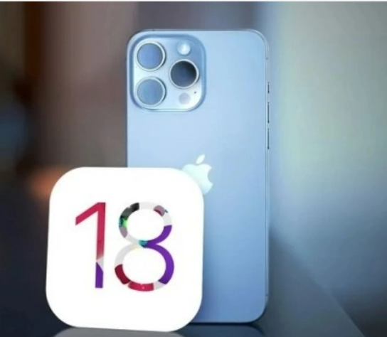
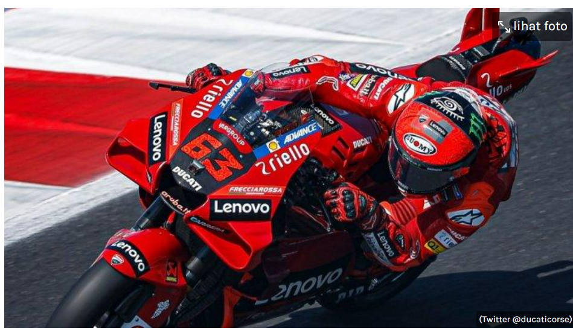
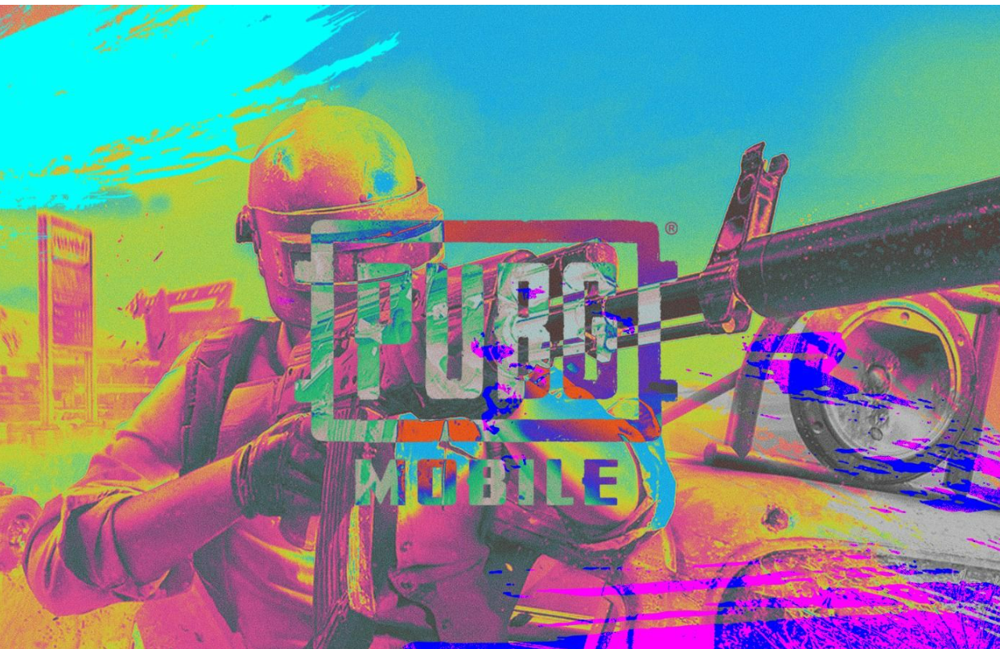

Mahasiswa aktif semester 4 Teknik Informatika Universitas Sam Ratulangi, saya juga memiliki hobi yaitu bermain alat musik
Blog
Article
Bocoran iOS 18: Pengguna iPhone Bisa Cicipi Tampilan Android?

Setelah memperkenalkan widget layar dan perpustakaan aplikasi di iOS 14, Apple disebut-sebut akan kembali membawa tampilan berbeda di perilisan iOS 18. Perubahan tampilan pada perangkat Apple ini sudah terlihat sejak iOS 7 beberapa waktu yang lalu. Perubahan besar pada tampilan perangkat makin nampak seiring update terbaru dari perusahaan tersebut. Dilansir dari GSM Arena, Mark Gurman dari Bloomberg menyebut jika iOS 18 mendatang nantinya membawa tampilan berbeda pada home screen iPhone. Perubahan ini memungkinkan pengguna melakukan penyesuaian tampilan layaknya Android. Satu fitur baru yang akan dibawa oleh update terbaru ini ada pada ikon aplikasi.
Baca Selengkapnya
Persaingan Sengit di MotoGP 2024: Ducati Hadapi Tantangan Berat

Musim ini posisi Ducati sebagai penguasa tunggal MotoGP diprediksi akan hadapi persaingan ketat.
Rider utama tim, Francesco Bagnaia dan Enea Bastianini, tidak lagi dapat mengendalikan perlombaan dengan mudah di atas lintasan MotoGP 2024.
Khususnya bagi Pecco Bagnaia, yang sebelumnya terlihat begitu nyaman dengan motor Desmosedici GP24, kini dihadapkan pada tantangan yang lebih berat.
Musim ini, Bagnaia langsung dihadapkan pada persaingan ketat dengan berbagai lawan yang beragam.
Tidak hanya lawan dari tim lain, tetapi pesaing terberatnya bahkan berasal dari sesama pabrikan.
Jorge Martin dan Marc Marquez, antara lain, memberikan tekanan yang kuat pada Bagnaia.
Bahkan, sang juara dunia tidak boleh mengabaikan ancaman dari rider lain yang memiliki potensi.
Menurut Enea Bastianini, para pembalap dari tim KTM menjadi ancaman nyata bagi Ducati di musim ini.
Baca Selengkapnya
PUBG Mobile Umumkan Peserta Prelims untuk PMGO 2024

Gelaran PUBG Mobile Global Open (PMGO) 2024 sudah mengumumkan format turnamen dan fase-fase yang akan tim-tim peserta lalui sebelum menuju ke gelar juara.
Pada PMGO 2024 ini akan terbagi ke dalam beberapa fase mulai dari Qualifier, Prelims, hingga Main Event yang tentu saja hanya tim-tim terbaik yang akan tanding di panggung utama nantinya.
Baru-baru ini PUBG Mobile Esports telah mengumumkan daftar tim yang akan mengikuti tahapan Prelims yang akan berlangsung 1-4 April 2024 mendatang.
Pada Prelims PMGC 2024 ini akan terdapat 24 tim yang akan bersaing guna memperebutkan 8 tiket menuju ke Main Event, di mana sudah ada 16 tim yang dapatkan undangan langsung.
Ke-16 tim ini tentu saja adalah tim partnership dari PUBG Mobile Esports yang berasal dari beberapa regional seperti SEA, America, hingga EMEA yang akan saling bersaing.
Dari SEA ada D'Xavier dan Vampire Esports yang mendapatkan undangan langsung menuju ke Prelims PMGO 2024 mendatang, kemudian ada juga beberapa tim America seperti FURIA, Influence Rage, Team Liquid, All Glory Gaming, 9z Team, dan Team Queso.
Selanjutnya ada pula tim-tim kuat dari Eropa seperti Natus Vincere hingga Virtus.Pro yang juga akan bersaing mendapatkan tiket ke Main Event PMGO 2024 nanti.
Baca Selengkapnya